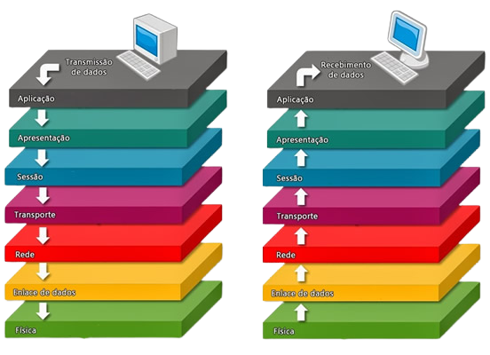
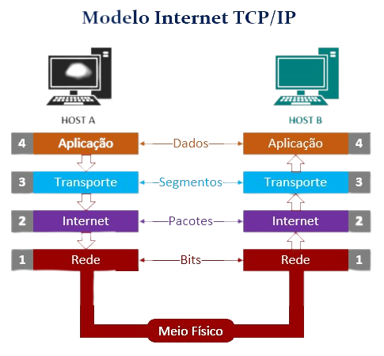
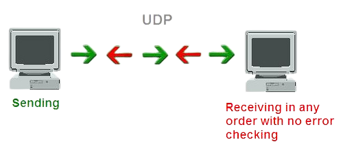
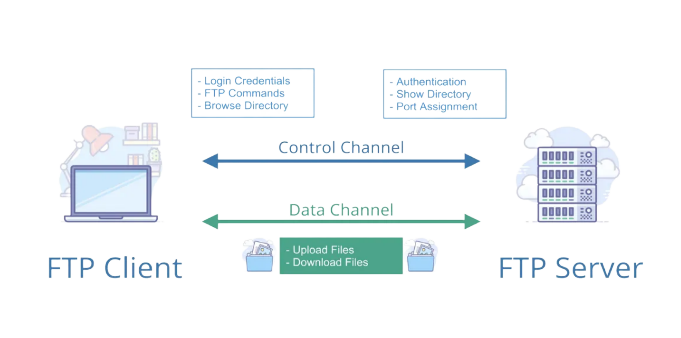

Serviços de Rede
Modelos OSI
O modelo de interconexão de sistemas abertos (OSI) é um modelo conceitual criado pela Organização Internacional de Normalização que permite que diversos sistemas de comunicação se comuniquem usando protocolos padronizados.

Modelo TCP/IP
TCP/IP é um conjunto de protocolos que possibilita a comunicação entre computadores e servidores, formando a Internet. Ele combina o Protocolo de Controle de Transmissão (TCP), responsável pela transmissão de dados, com o Protocolo de Internet (IP), que identifica os computadores e servidores.

UDP
O Protocolo UDP é um protocolo de comunicação utilizado em toda a internet para transmissões com validade especialmente limitada, tais como reproduções de vídeo ou pesquisas no DNS. Ele acelera as comunicações ao não estabelecer formalmente uma conexão antes que os dados sejam transferidos. Isso permite que os dados sejam transferidos muito rapidamente, mas também pode fazer com que pacotes se percam em trânsito além de criar oportunidades de exploração na forma de ataques DDoS.

FTP
O FTP (File Transfer Protocol) ou Protocolo de Transferência de Arquivos, em português, é um protocolo usado para transferir arquivos por uma rede de computadores, desde uma local à internet. Basicamente, permite a troca de arquivos entre dois computadores de modo direto, em que um ganha acesso às pastas do outro.

DNS
DNS ou Domain Name System é um sistema de banco de dados uilizado na internet com objetivo de traduzir os endereços dos sistes de uma complexa sequência numérica para algo mais simples e amigável, como os nomes dos endereços que escrevemos quando usamos o navegador.

DHCP
O protocolo de configuração dinâmica de host, ou simplesmente DHCP, é o nome de um servidor TCP/IP que oferece serviços de configuração dinâmica em redes. Sem que o usuário perceba, ao se conectar em uma rede, esse serviço fornece automaticamente endereço IP, máscara de sub-rede, Gateway Padrão, endereço IP de um ou mais servidores DNS/WINS e sufixos de pesquisa do DNS, para que o dispositivo do usuário possa utilizar a rede e obter acesso aos recursos disponibilizados nela e acesso à internet, se houver.
HTTP/HTTPS
HTTP e HTTPS são protocolos de segurança na Internet bastante evidentes quando acessamos sites de banco ou lojas virtuais para realizar transações financeiras. Geralmente, eles aparecem por meio de avisos para verificar o cadeado de segurança ou observar a sigla HTTPS na barra de endereços do navegador.
WEBSERVER
Servidor web é a máquina responsável por armazenar arquivos de um website ou o programa de computador configurado para responder as solicitações HTTP enviadas por clientes (geralmente navegadores). O servidor web pode ter duas definições diferentes, dependendo do contexto. Quando se fala servidor web geralmente quer dizer um computador com software e hardware configurados para hospedagem de aplicações.